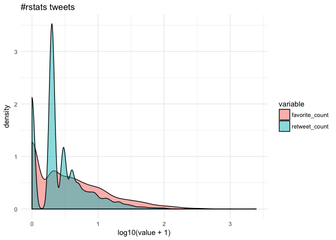

Overview
The kerasformula package offers a high-level interface for the R interface to Keras. It’s main interface is the kms function, a regression-style interface to keras_model_sequential that uses formulas and sparse matrices.
The kerasformula package is available on CRAN, and can be installed with:
# install the kerasformula package
install.packages("kerasformula")
# or devtools::install_github("rdrr1990/kerasformula")
library(kerasformula)
# install the core keras library (if you haven't already done so)
# see ?install_keras() for options e.g. install_keras(tensorflow = "gpu")
install_keras()The kms() function
Many classic machine learning tutorials assume that data come in a relatively homogenous form (e.g., pixels for digit recognition or word counts or ranks) which can make coding somewhat cumbersome when data is contained in a heterogenous data frame. kms() takes advantage of the flexibility of R formulas to smooth this process.
kms builds dense neural nets and, after fitting them, returns a single object with predictions, measures of fit, and details about the function call. kms accepts a number of parameters including the loss and activation functions found in keras. kms also accepts compiled keras_model_sequential objects allowing for even further customization. This little demo shows how kms can aid is model building and hyperparameter selection (e.g., batch size) starting with raw data gathered using library(rtweet).
Let’s look at #rstats tweets (excluding retweets) for a six-day period ending January 24, 2018 at 10:40. This happens to give us a nice reasonable number of observations to work with in terms of runtime (and the purpose of this document is to show syntax, not build particularly predictive models).
rstats <- search_tweets("#rstats", n = 10000, include_rts = FALSE)
dim(rstats)
[1] 2840 42Suppose our goal is to predict how popular tweets will be based on how often the tweet was retweeted and favorited (which correlate strongly).
cor(rstats$favorite_count, rstats$retweet_count, method="spearman")
[1] 0.7051952Since few tweeets go viral, the data are quite skewed towards zero.

Getting the most out of formulas
Let’s suppose we are interested in putting tweets into categories based on popularity but we’re not sure how finely-grained we want to make distinctions. Some of the data, like rstats$mentions_screen_name comes in a list of varying lengths, so let’s write a helper function to count non-NA entries.
n <- function(x) {
unlist(lapply(x, function(y){length(y) - is.na(y[1])}))
}Let’s start with a dense neural net, the default of kms. We can use base R functions to help clean the data–in this case, cut to discretize the outcome, grepl to look for key words, and weekdays and format to capture different aspects of the time the tweet was posted.
breaks <- c(-1, 0, 1, 10, 100, 1000, 10000)
popularity <- kms(cut(retweet_count + favorite_count, breaks) ~ screen_name +
source + n(hashtags) + n(mentions_screen_name) +
n(urls_url) + nchar(text) +
grepl('photo', media_type) +
weekdays(created_at) +
format(created_at, '%H'), rstats)
plot(popularity$history)
+ ggtitle(paste("#rstat popularity:",
paste0(round(100*popularity$evaluations$acc, 1), "%"),
"out-of-sample accuracy"))
+ theme_minimal()
popularity$confusion
popularity$confusion
(-1,0] (0,1] (1,10] (10,100] (100,1e+03] (1e+03,1e+04]
(-1,0] 37 12 28 2 0 0
(0,1] 14 19 72 1 0 0
(1,10] 6 11 187 30 0 0
(10,100] 1 3 54 68 0 0
(100,1e+03] 0 0 4 10 0 0
(1e+03,1e+04] 0 0 0 1 0 0The model only classifies about 55% of the out-of-sample data correctly and that predictive accuracy doesn’t improve after the first ten epochs. The confusion matrix suggests that model does best with tweets that are retweeted a handful of times but overpredicts the 1-10 level. The history plot also suggests that out-of-sample accuracy is not very stable. We can easily change the breakpoints and number of epochs.
breaks <- c(-1, 0, 1, 25, 50, 75, 100, 500, 1000, 10000)
popularity <- kms(cut(retweet_count + favorite_count, breaks) ~
n(hashtags) + n(mentions_screen_name) + n(urls_url) +
nchar(text) +
screen_name + source +
grepl('photo', media_type) +
weekdays(created_at) +
format(created_at, '%H'), rstats, Nepochs = 10)
plot(popularity$history)
+ ggtitle(paste("#rstat popularity (new breakpoints):",
paste0(round(100*popularity$evaluations$acc, 1), "%"),
"out-of-sample accuracy"))
+ theme_minimal()
That helped some (about 5% additional predictive accuracy). Suppose we want to add a little more data. Let’s first store the input formula.
pop_input <- "cut(retweet_count + favorite_count, breaks) ~
n(hashtags) + n(mentions_screen_name) + n(urls_url) +
nchar(text) +
screen_name + source +
grepl('photo', media_type) +
weekdays(created_at) +
format(created_at, '%H')"Here we use paste0 to add to the formula by looping over user IDs adding something like:
grepl("12233344455556", mentions_user_id)
mentions <- unlist(rstats$mentions_user_id)
mentions <- unique(mentions[which(table(mentions) > 5)]) # remove infrequent
mentions <- mentions[!is.na(mentions)] # drop NA
for(i in mentions)
pop_input <- paste0(pop_input, " + ", "grepl(", i, ", mentions_user_id)")
popularity <- kms(pop_input, rstats)
That helped a touch but the predictive accuracy is still fairly unstable across epochs…
Customizing layers with kms()
We could add more data, perhaps add individual words from the text or some other summary stat (mean(text %in% LETTERS) to see if all caps explains popularity). But let’s alter the neural net.
The input.formula is used to create a sparse model matrix. For example, rstats$source (Twitter or Twitter-client application type) and rstats$screen_name are character vectors that will be dummied out. How many columns does it have?
popularity$P
[1] 1277Say we wanted to reshape the layers to transition more gradually from the input shape to the output.
popularity <- kms(pop_input, rstats,
layers = list(
units = c(1024, 512, 256, 128, NA),
activation = c("relu", "relu", "relu", "relu", "softmax"),
dropout = c(0.5, 0.45, 0.4, 0.35, NA)
))
kms builds a keras_sequential_model(), which is a stack of linear layers. The input shape is determined by the dimensionality of the model matrix (popularity$P) but after that users are free to determine the number of layers and so on. The kms argument layers expects a list, the first entry of which is a vector units with which to call keras::layer_dense(). The first element the number of units in the first layer, the second element for the second layer, and so on (NA as the final element connotes to auto-detect the final number of units based on the observed number of outcomes). activation is also passed to layer_dense() and may take values such as softmax, relu, elu, and linear. (kms also has a separate parameter to control the optimizer; by default kms(... optimizer = 'rms_prop').) The dropout that follows each dense layer rate prevents overfitting (but of course isn’t applicable to the final layer).
Choosing a Batch Size
By default, kms uses batches of 32. Suppose we were happy with our model but didn’t have any particular intuition about what the size should be.
Nbatch <- c(16, 32, 64)
Nruns <- 4
accuracy <- matrix(nrow = Nruns, ncol = length(Nbatch))
colnames(accuracy) <- paste0("Nbatch_", Nbatch)
est <- list()
for(i in 1:Nruns){
for(j in 1:length(Nbatch)){
est[[i]] <- kms(pop_input, rstats, Nepochs = 2, batch_size = Nbatch[j])
accuracy[i,j] <- est[[i]][["evaluations"]][["acc"]]
}
}
colMeans(accuracy)
Nbatch_16 Nbatch_32 Nbatch_64
0.5088407 0.3820850 0.5556952 For the sake of curtailing runtime, the number of epochs was set arbitrarily short but, from those results, 64 is the best batch size.
Making predictions for new data
Thus far, we have been using the default settings for kms which first splits data into 80% training and 20% testing. Of the 80% training, a certain portion is set aside for validation and that’s what produces the epoch-by-epoch graphs of loss and accuracy. The 20% is only used at the end to assess predictive accuracy. But suppose you wanted to make predictions on a new data set…
popularity <- kms(pop_input, rstats[1:1000,])
predictions <- predict(popularity, rstats[1001:2000,])
predictions$accuracy
[1] 0.579
# predictions$confusionBecause the formula creates a dummy variable for each screen name and mention, any given set of tweets is all but guaranteed to have different columns. predict.kms_fit is an S3 method that takes the new data and constructs a (sparse) model matrix that preserves the original structure of the training matrix. predict then returns the predictions along with a confusion matrix and accuracy score.
If your newdata has the same observed levels of y and columns of x_train (the model matrix), you can also use keras::predict_classes on object$model.
Using a compiled Keras model
This section shows how to input a model compiled in the fashion typical to library(keras), which is useful for more advanced models. Here is an example for lstm analogous to the imbd with Keras example.
k <- keras_model_sequential()
k %>%
layer_embedding(input_dim = popularity$P, output_dim = popularity$P) %>%
layer_lstm(units = 512, dropout = 0.4, recurrent_dropout = 0.2) %>%
layer_dense(units = 256, activation = "relu") %>%
layer_dropout(0.3) %>%
layer_dense(units = 8, # number of levels observed on y (outcome)
activation = 'sigmoid')
k %>% compile(
loss = 'categorical_crossentropy',
optimizer = 'rmsprop',
metrics = c('accuracy')
)
popularity_lstm <- kms(pop_input, rstats, k)Questions? Comments?
Drop me a line via the project’s Github repo. Special thanks to @dfalbel and @jjallaire for helpful suggestions!!